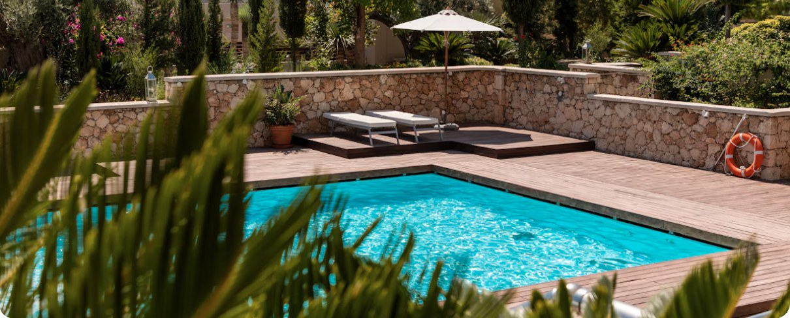

Piscinas de obra
La técnica del hormigón gunitado por vía húmeda, proyectado a alta presión, crea un vaso monolítico y estanco, sin juntas ni fisuras. Es el sistema constructivo de referencia en Cataluña por su longevidad, superior a 50 años, y su adaptabilidad a cualquier terreno rocoso o con desnivel.
- Garantía estructural 10 años
- Libertad absoluta de formas y profundidades
- Compatible con gres porcelánico gran formato
- Integración de playas secas y bancos de relax
Elige cómo la quieres y entiende qué implica cada decisión.
Estructura, forma, sistemas y uso se deciden juntos: cambiar uno a mitad de obra arrastra a los demás. Ve eligiendo y te explicamos qué condiciona y qué conlleva cada opción. Al final tendrás la configuración de tu piscina.
- Espacio y orientaciónSuperficie útil, sol, sombras y vistas.
- TerrenoTipo de suelo, pendiente y nivel freático.
- AccesosPor dónde entra la maquinaria y sale la tierra.
- PermisosLicencia o comunicación según el municipio.
- Uso previstoNadar, niños, reuniones, todo el año.
- PresupuestoDesde el principio, para proponer lo que tiene sentido.
{{cur.t}}
{{cur.d}}
{{cur.id}}
Cómo trabajamos
Un proceso transparente, organizado y coordinado paso a paso para que disfrutes de la experiencia sin preocupaciones.
{{fa.t}}
{{fa.desc}}
- {{a.x}}
Tres medidas, con lo básico.
Vaso de hormigón gunitado, depuración, revestimiento y coronación estándar. El precio final se cierra tras ver el terreno y los accesos.
[Precios y alcance de "lo básico" por confirmar por APEX.] IVA, licencias y obra civil extraordinaria aparte.

¿Cuánto cuesta construir una piscina?
Depende de dimensiones, terreno, accesos, tipología y acabados. Tras la visita te presentamos un presupuesto por partidas, con el alcance definido.
¿Necesito licencia?
Depende del municipio y de la obra: licencia o comunicación previa. Lo revisamos en la visita y te decimos qué hace falta.
¿Cuánto dura la obra?
Varía con el tamaño, el terreno, los permisos y la época del año. Te damos un calendario concreto en la propuesta técnica.
¿Hacéis también el mantenimiento después?
Sí. Quien ha construido la piscina es quien mejor conoce su instalación. Ver mantenimiento.